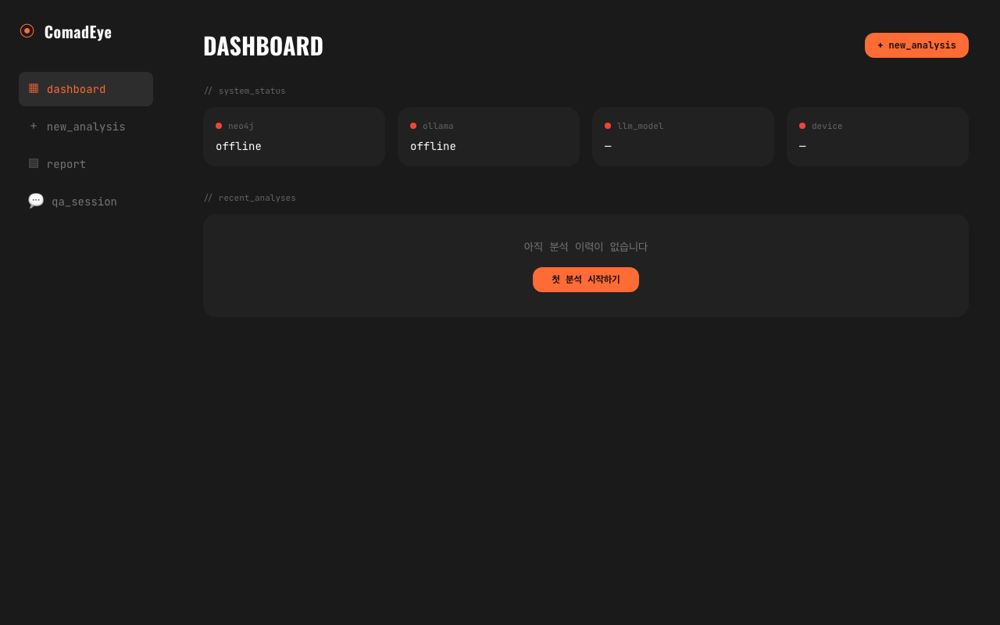
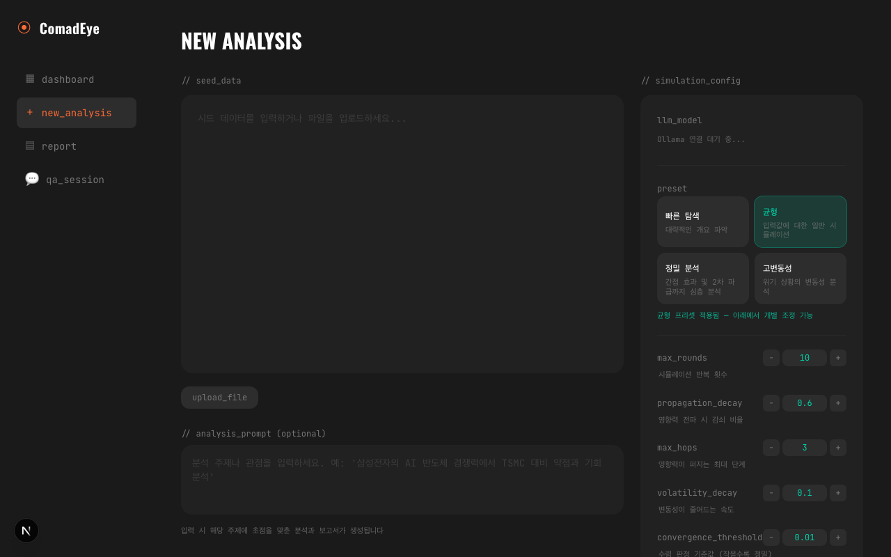
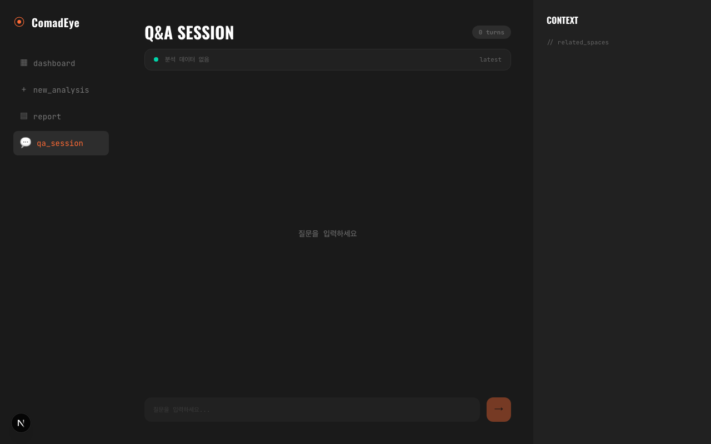
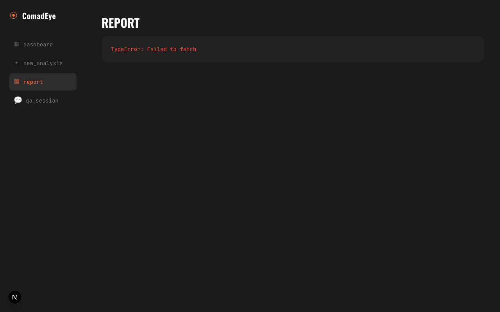

Eye — 예측 시뮬레이션 엔진
텍스트 입력(뉴스·보고서·논문)을 온톨로지 그래프로 변환하고, 10개 분석 렌즈를 통해 전파 시뮬레이션을 돌려 종합 보고서를 생성합니다. FastAPI 백엔드 + Next.js UI + 7 MCP 도구.
개요
Brain이 "무엇이 있는가"를 다룬다면, Eye는 "만약 X가 바뀌면 무슨 일이 일어나는가"를 다룹니다. 입력 텍스트에서 엔티티를 뽑아 별도의 Eye Neo4j 인스턴스(port 7687)에 그래프를 만들고, 각 노드의 변화가 이웃 노드에 얼마나 전파되는지 시뮬레이션합니다.

설치
# Python venv + 의존성
cd eye
python3.13 -m venv .venv
source .venv/bin/activate
pip install -r requirements.txt
# 환경 변수 (2026-04-12 @kht2199 PR로 정규화)
cp .env.example .env
# NEO4J_URI=bolt://localhost:7687 ← 7688이 아닌 7687 (brain과 분리된 DB)
# CORS_ALLOW_ORIGINS=http://localhost:3000
# Neo4j 컨테이너
docker compose up -d
# FastAPI
python -m api.server # http://localhost:8000
# Next.js 프론트엔드
cd web && npm install && npm run dev # http://localhost:3000파이프라인 6단계
- Ingestion — 텍스트 입력(파일/URL) 받아 청킹 + 임베딩(BGE-M3)
- Entity Extraction — Ollama(또는 Haiku) 기반 엔티티·관계·Claim 추출
- Graph Construction — Eye Neo4j에 노드/엣지 MERGE, analysis_space 태깅
- Community Detection — Leiden 기반 3단계 계층
- Propagation Simulation — 각 렌즈별로 변화 전파 확률 시뮬레이션 (N round)
- Report Generation — 렌즈별 해석 + 종합 예측 보고서 생성

분석 렌즈 (10개)
실존 인물/이론에 기반한 10개 분석 프레임워크. 각 렌즈는 서로 다른 축으로 그래프를 해석합니다.
| 렌즈 | 기반 | 질문 |
|---|---|---|
| Sun Tzu | 손자병법 | 상대 조직의 약점·강점·집중 포인트는? |
| Adam Smith | 보이지 않는 손 | 자기 이익 추구의 집합이 만드는 시장 균형 |
| Taleb | 안티프래질 | 꼬리 리스크 · 비대칭 노출 · 블랙스완 |
| Kahneman | Thinking Fast & Slow | 의사결정 편향 · System 1/2 |
| Meadows | 시스템 사고 | 피드백 루프 · 레버리지 포인트 |
| Clausewitz | 전쟁론 | 목적 · 수단 · 마찰 (옵션) |
| Darwin | 진화론 | 적응 · 선택 압력 (옵션) |
| + 3 legacy lenses (Porter's Five Forces, SWOT, PEST) | ||
웹 UI
Next.js 16 기반 React 앱. 분석 실행, 결과 조회, 렌즈별 Q&A, 리포트 다운로드.


AI 크롤러 대응 (v1.1, 2026-04-13)
초기 프런트엔드는 모든 페이지를 "use client" + useEffect로 구성했기에, AI에게 /analysis?job=…나 /report?job=… 링크를 던지면 빈 스켈레톤만 보고 "이 링크 못 읽어요"라고 답했습니다. 사용자 피드백을 받아 다음과 같이 전환했습니다.
- 서버 컴포넌트 전환 —
/analysis,/report가 server component가 되어 FastAPI에서 분석 데이터를 SSR 시점에 직접 가져옵니다. - sr-only SSR preview — 시각적으로는 숨긴
<section class="sr-only">안에 key_findings·공간별 요약·전체 보고서 마크다운을 HTML에 그대로 인라인. AI 크롤러는 JS 실행 없이도 내용을 읽습니다. - per-page
generateMetadata— title·description을 실제 분석 결과에서 생성./report?job=abc의 description은 보고서 상위 280자,/analysis?job=abc는 key_findings 상위 3개. - OpenGraph · Twitter Card · JSON-LD —
app/layout.tsx에서SoftwareApplication스키마 주입. public/robots.txt—GPTBot,ChatGPT-User,ClaudeBot,Claude-Web,PerplexityBot,Google-Extended를 명시적으로Allow.- Graceful fallback —
lib/server-api.ts에server-only가드, 30초revalidate, 백엔드가 죽어도null반환으로 클라이언트만 렌더.
E2E 실측 (jobId 7c2a5e33a138, 실제 Neo4j + API 가동):
| 경로 | main body (before) | main body (after) | 배수 |
|---|---|---|---|
/report?job=… | 18 B | 32,297 B | ×1,794 |
/analysis?job=… | 34 B | 353 B | ×10 |
| title 중복 | 5/5 페이지 동일 | 5/5 페이지 고유 | — |
| OG / JSON-LD | 0 / 0 | per-page / 전 페이지 | — |
이제 사용자가 AI에게 /report?job=xxx URL 하나만 던져도 전체 보고서가 요약됩니다. 세부 지침을 따로 주지 않아도 됩니다.
MCP 도구 (7개)
Claude Code에서 자연어로 호출 가능.
| 도구 | 역할 |
|---|---|
comad_eye_analyze | 텍스트 제출 → 파이프라인 실행 → 분석 ID 반환 |
comad_eye_preflight | 입력 검증 · 예상 처리 시간 · 비용 estimate |
comad_eye_ask | 특정 분석에 대해 렌즈별 Q&A |
comad_eye_jobs | 진행 중인 분석 목록 · 상태 (queued/running/done) |
comad_eye_report | 완료된 분석 리포트 조회 |
comad_eye_lenses | 사용 가능한 렌즈 목록 + 설명 |
comad_eye_status | Eye 서비스 헬스 체크 |
예측 추적 (Closed-Loop Learning)
분석 결과에 포함된 예측은 verification deadline과 함께 저장됩니다. 시간이 지난 후 실제 결과를 입력하면 정확도가 측정되고, 그 피드백이 다음 분석에 반영됩니다.
Prediction: "GPU 가격이 Q4까지 15% 상승할 것"
verification_deadline: 2026-12-31
...시간 경과...
Actual: 12% (input via web UI)
→ 해당 유형 예측 정확도: 0.73 → 0.71 (다음 예측 신뢰도 조정)배포 설정
프로덕션 배포 시 CORS allowlist를 환경변수로 주입합니다 (하드코딩 해제됨).
# .env
CORS_ALLOW_ORIGINS=https://eye.example.com,https://app.example.com
# 또는 구버전 호환 이름
COMADEYE_CORS_ALLOW_ORIGINS=...http://localhost:3000이 기본값. 여러 오리진은 쉼표로 구분.
관련 파일: eye/api/, eye/pipeline/, eye/simulation/, eye/lenses/, eye/web/, eye/.env.example